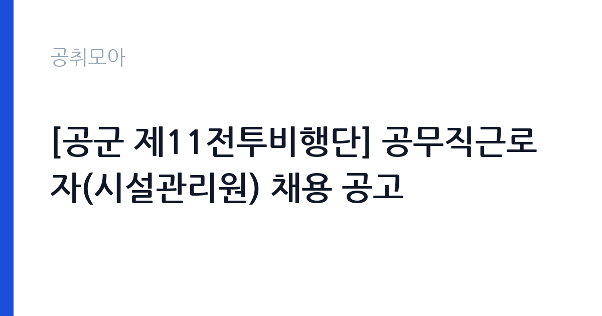

[국가기관] [공군 제11전투비행단] 공무직근로자(시설관리원) 채용 공고
국방부 국군조직 공군 공군제11전투비행단 · 대구 · 마감 2026-10-29 (D-14) · 출처 나라일터

한눈에 보는 모집 조건
| 기관 | 국방부 국군조직 공군 공군제11전투비행단 |
|---|---|
| 공고명 | [공군 제11전투비행단] 공무직근로자(시설관리원) 채용 공고 |
| 고용형태 | 공무직 |
| 근무지 | 대구 |
| 게시일 | 2026-10-16 |
| 마감일 | 2026-10-29 (D-14) |
지원자격, 이렇게 읽으세요
- 공무직(시설관리원) 1명
- 접수 ~2026-10-29 마감
- 세부 조건은 원문 공고문 확인
시설관리원은 공무직이라 별도의 필기시험 없이 서류와 면접으로 선발합니다. 관련 시설관리 경력이나 전기와 기계, 건축 분야 자격증이 있으면 서류에서 유리하며 체력단련장 근무 특성상 운동시설 운영 경험도 어필 요소가 됩니다. 군부대 근무라 보안 요건과 신원조회에 결격이 없어야 하며 세부 자격은 원문 공고의 응시자격 항목에서 확인하셔야 합니다. 문의처는 11전투비행단 인사행정처 053-989-3035입니다.
이 공고의 포인트
이 공고의 매력은 군부대 안의 체육시설을 관리하는 안정적인 공무직이라는 점입니다. 스포렉스는 장병과 군무원의 체력단련 공간이라 이용 시간대가 규칙적이고 업무 범위가 시설 유지에 집중됩니다. 정년 보장 공무직으로 민간 헬스장 설비 관리보다 고용이 안정적이며 대구 수성구 인근 근무라 지역 거주자에게 통근이 수월합니다. 채용인원이 1명이라 면접에서 시설 실무 이해도를 보여주는 것이 중요합니다.
전형은 어떻게 진행되나
원서접수는 10월 27일 화요일부터 10월 29일 목요일까지 사흘간 진행됩니다. 선발은 서류전형 후 면접시험 순이며 최종합격자는 2026년 12월 1일 채용 예정입니다. 접수 창구가 짧아 공고 확인이 늦으면 놓치기 쉬우니 접수 첫날 제출을 목표로 준비하시기 바랍니다. 제출서류와 접수처는 원문 공고에서 확인하시고 접수 마감 시각을 넘기지 않도록 주의하시기 바랍니다.
원문에서 확인한 전형 방식
[공군 제11전투비행단] 공무직근로자(시설관리원) 채용 공고 ○ 채용분야: 시설관리원(스포렉스) ○ 원서접수 기한: 2026년 10월 27일(화) ~ 2026년 10월 29일(목) ○ 선발방법: 서류전형 - 면접시험 ○ 채용예정일: 2026년 12월 1일 ○ 문의처: 공군 제11전투비행단 인사행정처(053-989-3035)
이런 분께 추천해요
- 운동시설이나 공공 체육시설의 설비 관리 경험이 있는 분께 적합합니다.
- 전기나 기계 분야 자격증을 갖고 군부대 공무직을 노리는 분께 권합니다.
- 대구 거주로 출퇴근이 가능하고 규칙적인 근무를 원하는 분께 잘 맞습니다.
지원 전 체크리스트
- 원문 공고의 응시자격과 제출서류 목록을 모두 확인했습니다.
- 경력증명서와 자격증 사본을 접수 전에 발급받았습니다.
- 접수 첫날 제출을 목표로 마감 사흘 전에는 서류를 완성했습니다.
- 군부대 출입과 신원조회 관련 유의사항을 공고문에서 확인했습니다.
모집 일정과 제출 타이밍
공고 등록일은 10월 16일이며 원서접수는 10월 27일부터 10월 29일까지입니다. 서류전형과 면접을 거쳐 12월 1일에 채용될 예정이므로 11월 중에는 면접 준비에 집중하시기 바랍니다. 접수 기간이 사흘뿐이라 주말인 10월 24일과 25일을 서류 준비에 쓰시면 여유 있습니다. 세부 전형 일정은 원문 공고와 인사행정처 안내를 따르시기 바랍니다.
직무 이해하기: 국가기관
스포렉스 시설관리원은 체력단련장의 건물과 운동기구를 함께 돌보는 자리입니다. 냉난방과 조명, 급배수 설비의 일상 점검과 고장 시 초동 조치가 기본이며 러닝머신과 웨이트 기구의 안전 상태를 수시로 확인합니다. 이용자 동선이 많은 공간이라 미끄럼과 낙상 위험 요소를 먼저 찾아 제거하는 예방 업무가 중요하고 간단한 보수는 직접, 전문 공사는 업체 발주로 처리합니다. 장병 체력측정 기간에는 시설 가동률을 높게 유지해야 하므로 사전 점검을 철저히 하셔야 합니다.
자기소개서 작성 팁
시설관리 자기소개서에서는 고장 대응 경험을 시간 순으로 쓰시는 것이 가장 설득력이 있습니다. 언제 어떤 설비에 이상이 생겼고 본인이 어떻게 조치해 정상화했는지를 구체적으로 적으시면 실무 역량이 드러납니다. 운동시설이라면 이용자 안전을 먼저 생각했던 사례를 넣어주시면 좋습니다. 군부대 지원 동기에는 보안 준수와 규율 이행 의지를 언급하시면 신뢰를 얻으실 수 있습니다.
면접 준비 포인트
면접에서는 시설 실무 질문이 중심이 됩니다. 보일러와 냉난방기 이상 징후를 어떻게 파악하는지, 정전 시 우선 조치 순서는 무엇인지 같은 질문에 현장 용어로 답하시기 바랍니다. 체력단련장 특성상 이용자 안전사고 예방 방안을 묻는다면 일일 점검표 운용 경험을 들어 설명하시면 좋습니다. 조기 출근과 휴일 근무 가능 여부에는 현실적인 답변을 준비하시기 바랍니다.
급여·근무조건 읽는 법
이번 공고 본문에는 보수 금액이 공개되어 있지 않아 정확한 급여는 원문 공고문에서 확인하셔야 합니다. 참고로 유사 국가기관 공무직 임금표인 산림청 2026년 공무직근로자 임금표에서는 시설 직종 1호봉 월임금액이 2,157,000원으로 고시되어 있고 관련 자격증 소지 시 월 50,000원의 자격증 수당이 붙는 구조입니다. 출처는 산림청 누리집 게시 자료이며 국방부 소속 부대의 실제 임금표와는 다를 수 있으니 원문 확인이 필수입니다. 일반적으로 기본급에 수당과 명절휴가비 등이 더해지며 실수령액은 공제 후 금액이 됩니다. 경쟁률과 합격선은 공개되지 않았습니다.
자주 묻는 질문
- 스포렉스가 무엇인가요?
군 체력단련장의 명칭으로 장병과 군무원, 가족이 이용하는 체육시설입니다. 헬스 기구와 실내 운동 공간의 설비를 관리하는 업무가 중심이며 일반 건물 관리보다 이용자 안전 점검이 강조됩니다. - 공무직도 정년이 보장되나요?
공무직은 기간의 정함이 없는 근로자로 기관 취업규칙의 정년까지 근무할 수 있습니다. 정년 연령과 보수 체계는 부대 공무직 규정에 따르므로 원문 공고와 인사행정처 문의로 확인하시기 바랍니다. - 접수 기간이 왜 짧나요?
원서접수가 10월 27일부터 29일까지 사흘로 짧게 잡혀 있습니다. 군부대 공무직 채용은 접수 창구가 짧은 경우가 많으니 공고를 보는 즉시 서류를 준비해 접수 첫날 제출하시는 것이 안전합니다.
함께 보면 좋은 공고
[국가기관] 국립한글박물관 공무직근로자(시설주임(전기)) 채용 공고 — 마감 2026-10-26[국가기관] 과학기술정보통신부 기간제 근로자(비서 및 행정지원) 채용 공고 — 마감 2026-10-26[국가기관] [공군 제11전투비행단] 공무직근로자(청소관리원) 채용 공고 — 마감 2026-10-29출처: 나라일터 공개정보를 바탕으로 공취모아가 정리한 안내글입니다. 모집 조건·일정은 변경될 수 있으니 지원 전 반드시 원문 공고문을 확인하세요. 본 글은 정보 제공용이며 합격을 보장하지 않습니다.